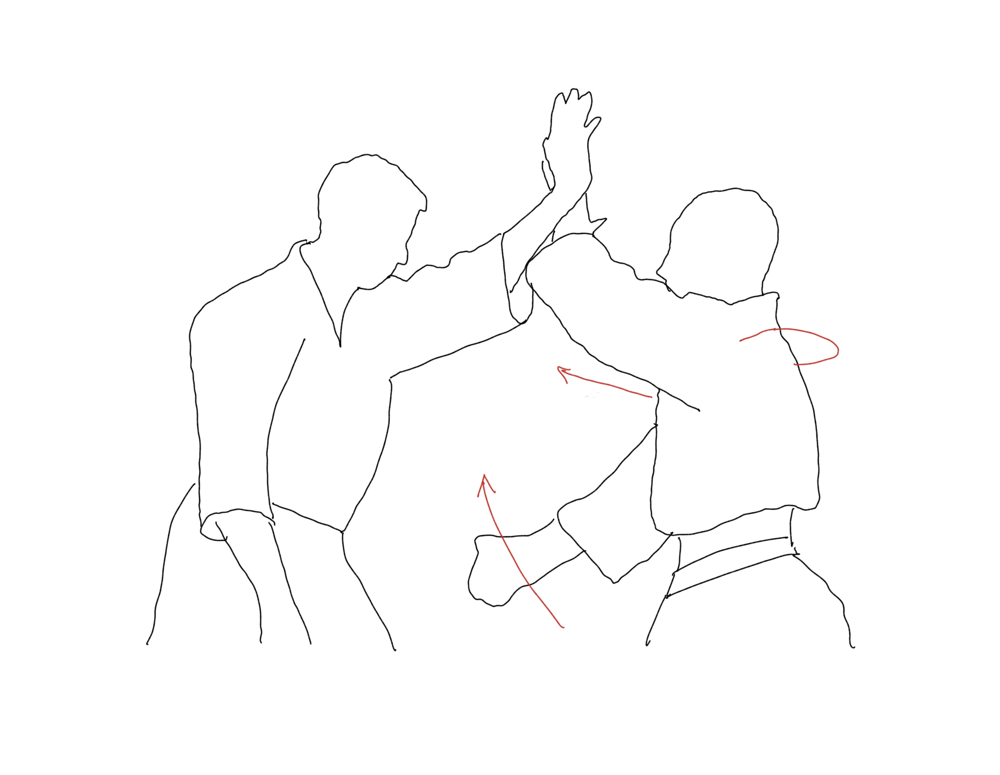

1. En primera instancia, el sujeto que sufre el ataque bloquea con su brazo izquierdo a la de la otra persona. A su vez, aproxima la mano derecha a la espalda del contrincante.
El aikido es un arte marcial contemporáneo, en el que existen diversos tipos de posiciones y movimientos de defensa ante un ataque. A continuación se enseñará el llamado shomen uchi irimi nage.
1. En primera instancia, el sujeto que sufre el ataque bloquea con su brazo izquierdo a la de la otra persona. A su vez, aproxima la mano derecha a la espalda del contrincante.
2. Las manos que anteriormente se acercaron al opotente, le envuelven la muñeca y toman por la espalda respectivamente.
3. Una vez el brazo del oponente fue empujado hacia abajo, con la parte interior del codo se acerca a la zona del cuello del oponente.
4. Con la mano que se encontraba en la espalda del oponente, se sujeta la vestimenta de este y se tira hacia abajo.
5. Con el brazo izquierdo que se encuentra cerca del cuello, se golpea con la intención de derribar al oponente.
6. Finalmente se le da impulso al golpe anterioir para asegurarse de que el atacante esté en el suelo.